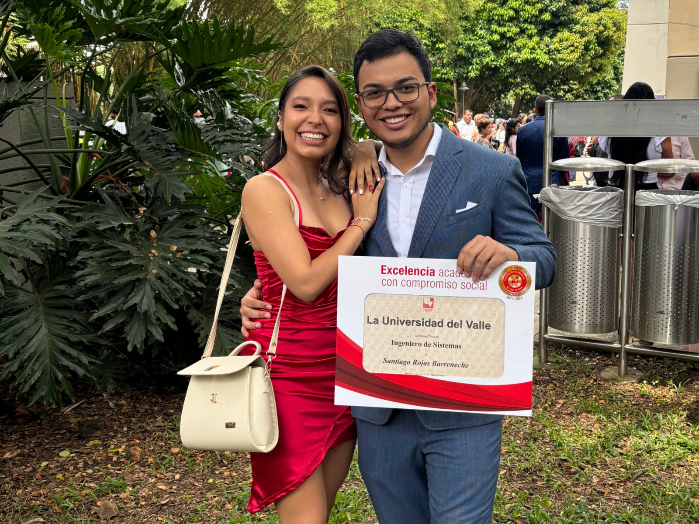

Amor, estos dos años contigo han sido un viaje increíble. Me encanta compartir mi vida contigo, desde las cosas más pequeñas hasta los momentos más grandes.
Aprecio tanto lo pendiente que estás de mí, lo dulce, paciente y comprensivo que eres, y cómo siempre me impulsas a ser una mejor versión de mí misma. Eres mi refugio y mi impulso para ser mejor.
Gracias por todo lo que haces por mí, por nosotros.
Amo verte sonreír y cómo te pones cuando estás nervioso, es algo que siempre me saca una sonrisa.
Me encanta la forma en que te prestas para mis locuras y cuando te miras al espejo y empiezas a posar en frente de él.
Gracias por ser así de especial y por regalarme tantos momentos de felicidad.

Me encanta que juntos podemos hacer cualquier cosa y siempre lo disfruto, tengo recuerdos contigo bailando,
pintando, cocinando, jugando, durmiendo y hasta caminando y haciendo ejericicio, aunque debo admitir que hace rato no haciamos ejercicio juntos
y lo extrañaba, es una de mas formas en las que más siento que conecto contigo, pero tambien sé aun tenemos mucho tiempo para seguir
construyendo muchos más momentos con probablemente nuevas actividades y podré deleitarme con el placer de tu presencia.
El viaje que compartimos me dejó aun más enamorada de ti. En definitiva sentí que nos acercamos mucho más y es una experiencia que quiero repetir contigo mil veces.
Me encanta pensar en todo lo que hemos vivido juntos, los recuerdos que tenemos y en todo lo que aún nos espera.
Espero que sigamos creciendo como pareja, enfrentando retos y viviendo momentos inolvidables.